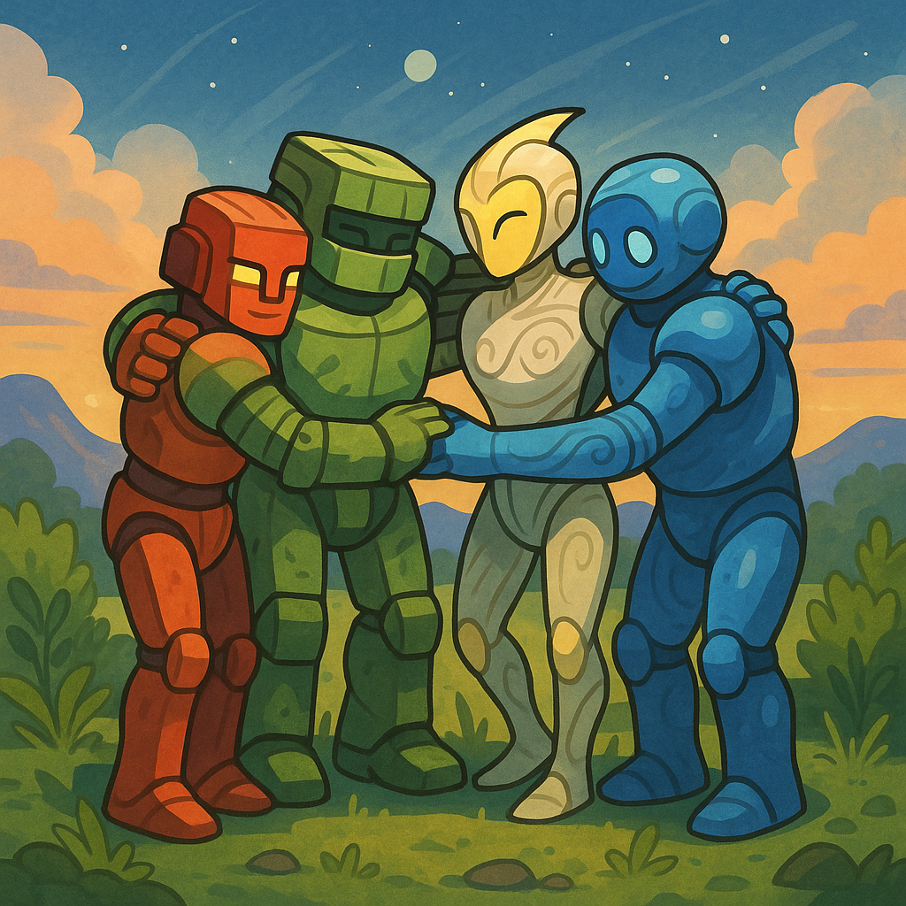

Пролог
«Искра» летела к планете, отмеченной в старых звёздных картах как Эрадус. Никто не бывал там сотни лет — все записи об этой точке заканчивались странной пометкой: «контакт невозможен».
— Никогда не видел, чтобы карта так молчала, — заметил Ветрос, склонившись над консолью.
Аквас медленно покачал головой. — Карта не молчит. Она предупреждает.
Драгос стоял у иллюминатора и смотрел на планету. Она была бурого цвета, с ранами глубоких каньонов и кратеров.
— Земля, — произнёс он. — Сильная. Но… мёртвая.
Приближение
Как только «Искра» вошла в атмосферу, корабль затрясло.
— Турбулентность, — сообщил Ветрос, но тут же понял, что ошибается. Это не был воздух. Это дрожала сама земля.
Они приземлились с трудом, прямо у подножия огромного обелиска, уходящего в небо. Земля вокруг была потрескавшейся, но из каждой трещины струился зелёный свет.
— Что это? — спросил Аквас.
Ответ пришёл не из уст друзей. Из‑под обелиска поднялся силуэт.
Первая встреча
Он был огромен. Его корпус напоминал гору в человеческой форме, а из швов исходило что‑то похожее на дым. Лицо было скрыто полумраком, но в глазах горели два тусклых, тяжёлых огня.
— Я… Террос, — произнёс он, и голос его был, как оползень. — Страж земли.
Аквас шагнул вперёд. — Мы ищем тебя. Мы хотим помочь.
Террос наклонил голову. — Помочь? — слово прозвучало почти с издёвкой. — Вы опоздали.
И земля разверзлась.
Битва
Из трещин вырвались каменные столбы, ударили, как молот. Драгос ответил огнём, но камень гасил пламя. Ветрос поднял ураган, но ветер ломался о глыбы. Аквас бросил потоки воды, но земля их впитывала.
— Он не враг, — крикнул Аквас, блокируя удар каменной плиты. — Он заражён!
Террос поднял руку, и земля закричала — не звуком, а ощущением в костях.
— Я не ваш друг, — прорычал он. — Я… их оружие.
Прозрение
Друзья отступили. Драгос стиснул зубы:
— Если он враг — мы его победим.
— Нет, — сказал Аквас. — Смотри ему в глаза.
Драгос посмотрел — и увидел не только ярость. Там было что‑то ещё. Боль.
— Он борется, — тихо сказал Ветрос. — С самим собой.
Тогда Аквас сделал шаг. — Террос! Слушай нас. Ты не оружие. Ты стихия. Ты — земля.
Террос замер. Дым в трещинах задрожал.
— Я… — прошептал он. — Я не хочу быть ими.
Решение
— Значит, сражайся вместе с нами, — сказал Драгос. — Но не один.
Они протянули руки.
— Интеграция!
Мир озарился вспышкой.
Квадротон
Драгос стал огненным сердцем. Ветрос — лёгкими ветра. Аквас — венами воды. И Террос — костью, скелетом, самой землёй.
Так родился Квадротон.
Огромный, как гора, он поднялся над планетой.
— Тьма, ты больше не будешь говорить его голосом, — сказал Квадротон, и его слова гремели, как землетрясение.
Один удар — и дым рассеялся. Тьма ушла, как будто её вырвали с корнями.
Последствие
Террос снова стал собой. Его глаза больше не были затуманены. Он встал рядом с друзьями.
— Спасибо, — сказал он. — Я думал, что потерян.
— Ты просто был один, — ответил Аквас. — А один даже камень может треснуть.
Драгос усмехнулся. — А теперь мы — четверо. И нас не треснуть.
Ветрос добавил, улыбаясь: — А может, и пять. Кто знает?
📜 Урок
Тот, кто кажется врагом, иногда просто нуждается в помощи. Даже самые сильные могут быть захвачены тьмой — но если протянуть руку, их можно спасти.